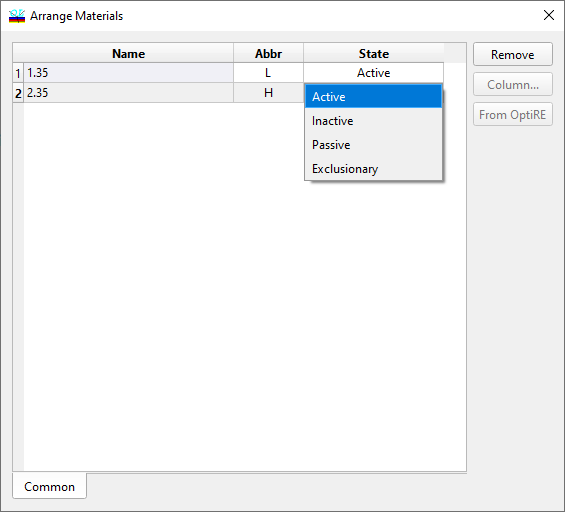

Arrange Materials
Arrange Materials
Navigation: OptiLayer Menu Commands > Synthesis Menu > Analysis and Synthesis Options >
Arrange Materials
` <idh_synthesis_options_design_b.html>`__ ` <idh_synthesis_options.html>`__ ` <trapping.html>`__
For each loaded material, this Analysis/Synthesis Option allows you to change its abbreviation and usage state.

Click an appropriate cell in the Abbr column to set an abbreviation (L,H, etc.).
Click a cell in the State column to choose between Active, Inactive, Passive or Exclusionary states. Only layers with active materials are modified in the course of the design procedure.
It is possible to load or select materials in the Arrange Materials dialog that are different from those loaded into the main configuration. In this case, these Vacuum Materials will be used in all computations related to vacuum cases. For example, OptiMonitor, Pre-production Estimation of Errors, Monochromatic and Broadband Monitoring Simulators will utilize these materials. If the entries for Vacuum Materials are empty or identical to the main material name, then there will be no changes in material properties between ex situ and in situ cases.
You can remove any materials that are no longer needed using the Remove button. If the material to be removed is currently being used in a design, you will be prompted to confirm the removal of the design as well. You must confirm the removal of the design if you want the material to be deleted from memory. If you cancel the operation, no changes will be made.
The Default button restores the default settings.
The Column button is used to open the Column Editor.
The From OptiRE button allows you to load the configuration of materials and corresponding abbreviations from an OptiRE project file.
The Apply and OK buttons are used to apply the modifications, with OK also closing the dialog.
See also: